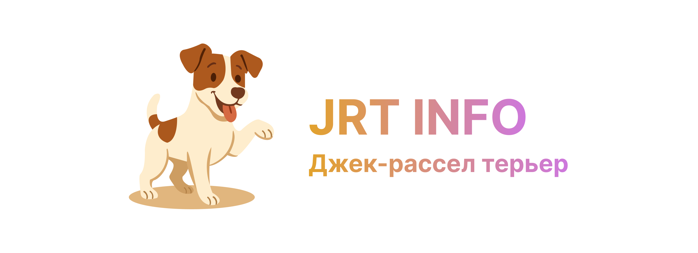
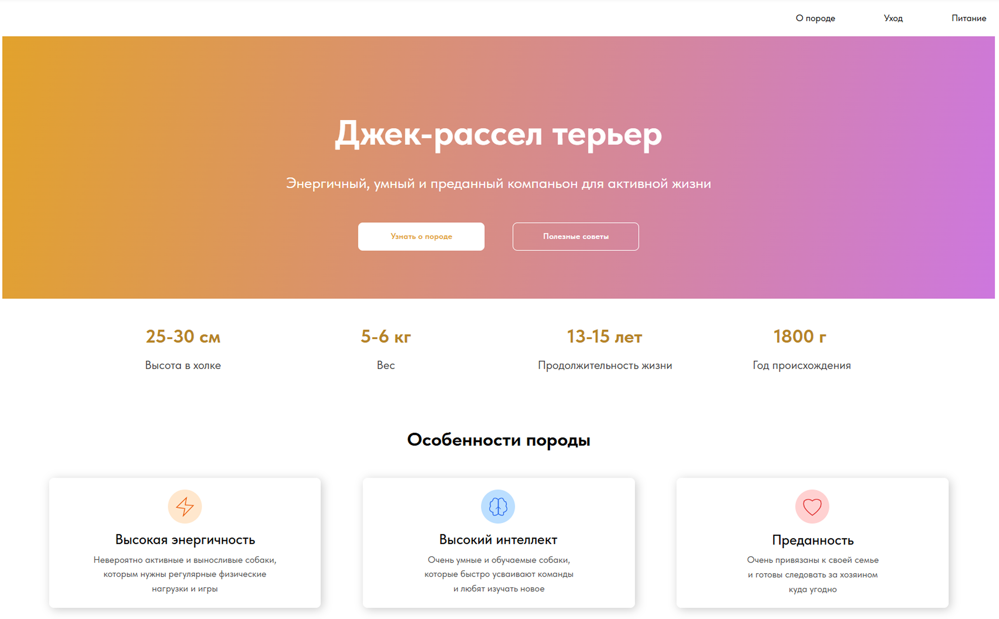
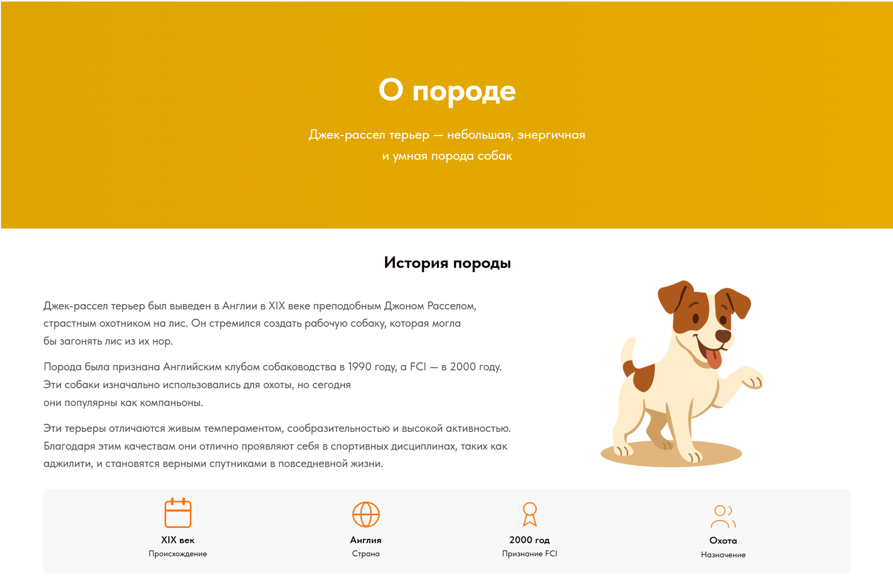

← Назад к портфолио


Информационный сайт о породе Джек-Рассел-терьер
Я разработал информационный сайт, посвящённый породе собак Джек-Рассел-терьер.
Основная цель проекта — предоставить пользователям удобный и понятный источник информации о данной породе. На сайте собраны материалы об истории происхождения Джек-Рассел-терьера, особенностях характера, правилах кормления, ухода, воспитания и содержания собаки.
При создании сайта особое внимание было уделено удобной структуре страниц, читаемости текста и визуальному оформлению. Сайт адаптирован для разных устройств и позволяет быстро находить нужную информацию как начинающим владельцам, так и тем, кто только планирует завести собаку этой породы.
Основные возможности
Информация об истории породы
Описание внешних особенностей
Рекомендации по кормлению
Советы по уходу и содержанию
Информация о воспитании и дрессировке
Адаптивный интерфейс
Галерея проекта

